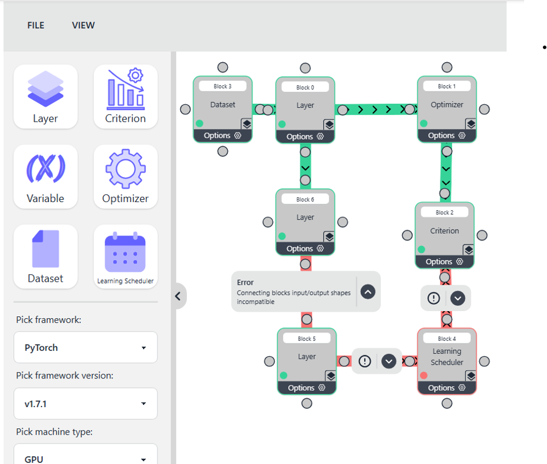

MEng Software Engineering
Year 4
- Genesys (group work; Working with clients to identify and solve problems through agile and lean startup practices)
Self-Elected Modules
- Parallel Computing with Graphical Processing Units (GPUs) (multi-core CPU processing using OpenMP and high performance GPU programming using CUDA; Writing optimized parallel code while understanding hardware for maximum efficiency)
- Natural Language Processing (explore NLP applications like machine translation and text classification, gaining hands-on experience in implementing and evaluating NLP techniques)
- Machine Learning and Adaptive Intelligence (statistical machine learning and probabilistic modeling to describe real-world phenomena)
- Text Processing (explores modern quantitative techniques for analyzing large text corpora)
- Speech Processing (examines both the production and perception of speech, taking a multi-disciplinary approach)
Year 3
- Dissertation Project (Web framework that provides a GUI for building layers in a neural network; Uses the Svelte framework and Json for configuration)

Node GUI
- Finance and Law for Engineers (introduce engineering students to key areas of financial and legal risk that engineers should be aware of in their working environment)
Self-Elected Modules
- 3D Computer Graphics (techniques used in modern 3D computer graphics; Programming: C++, OpenGL, GLSL)
- Software Reengineering (how to reverse-engineer and appraise complex, unwieldy systems by implementing source code and execution analysis techniques; strategies that can be used to adapt and reengineer such systems to improve their quality and viability; Practical work using Git repositories)
- Software Testing and Analysis (problems and techniques of analysing and testing software systems)
- Reinforcement Learning (Introduction to the fundamentals of reinforcement learning, where agents learn through trial and error using rewards)
- Software Development for Mobile Devices (Uses MVC or MVVM when developing software for mobile devices; Practical work develops skills with the Android platform)
- Cyber Security Team Project (Cyber security management, incident handling, and threat mitigation)
- Managing Engineering Projects and Teams (group work; Project management skills, covering the project lifecycle, risk and quality management, and stakeholder engagement in engineering contexts. Emphasizing both technical and human factors needed to foster teamwork, collaboration, and effective project execution within organizations)
Year 2
- Data Driven Computingg (introduction to machine learning and pattern processing, but with a clear emphasis on applications; Programming: Python)
- Systems Design and Security (Focus is software systems design; Includes: UML, SQL and agile methods; Programming: Java)
- Robotics (design and implementation of the technology underpinning contemporary robotics; multidisciplinary content spanning psychology, human factors, computer science and robotics; Programming: Robot Operating System)
- Logic in Computer Sciencee (foundations of logic in computer science)
- Functional Programming (Programming: Haskell)
- Automata, Computation and Complexity (logical foundations and tools for modelling and analysing computing systems)
- Software Hut (group work; covers the processes of engineering a real software system for a client in a competitive environment; Programming: depends on client needs, e.g. Ruby on Rails; Includes extensive use of version control)
- Engineering - You’re Hired (One week group project done in multi-disciplinary groups in the Faculty of Engineering; develops students’ academic, transferable and employability skills; problems provided by industrial partners.)
Year 1
- Introduction to Software Engineering (Includes: practical experience in teamwork and managing software projects; Version control; Programming: Ruby;)
- Foundations of Computer Science (Includes: Mathematical techniques that are the foundation for other computer science topics)
- Java Programming (Includes: writing and testing well-structured and readable programs to solve problems; Programming: Java)
- Machines and Intelligence (Includes: Intro to key concepts and problems in the field of AI; Lab classes include a range of things such as robotics and use of generative AI tools)
- Devices and Networks (Includes: computer architecture and aspects of networks)
- Web and Internet Technology (Focus is on front-end development and includes practical work using HTML, CSS and JavaScript to develop websites; Includes: accessibility and legal issues)
- Introduction to Algorithms and Data Structures (Includes: design and analysis of efficient algorithms and data structures)
- Global Engineering Challenge Week (One week group project done in multi-disciplinary groups in the Faculty of Engineering; develops students’ academic, transferable and employability skills as well as widening horizons as global citizens)
{kind=link}